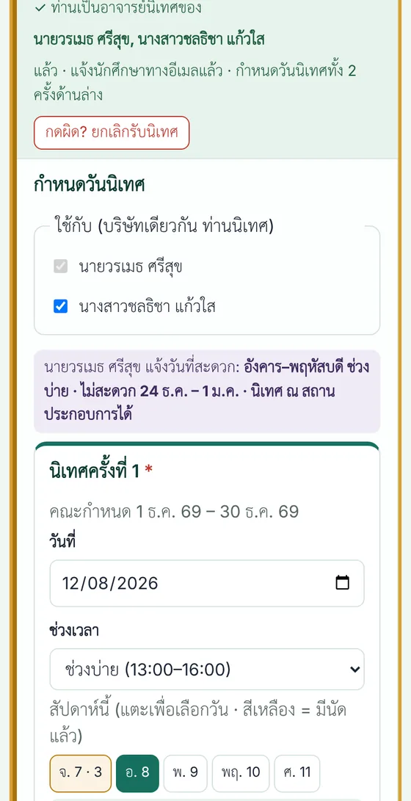
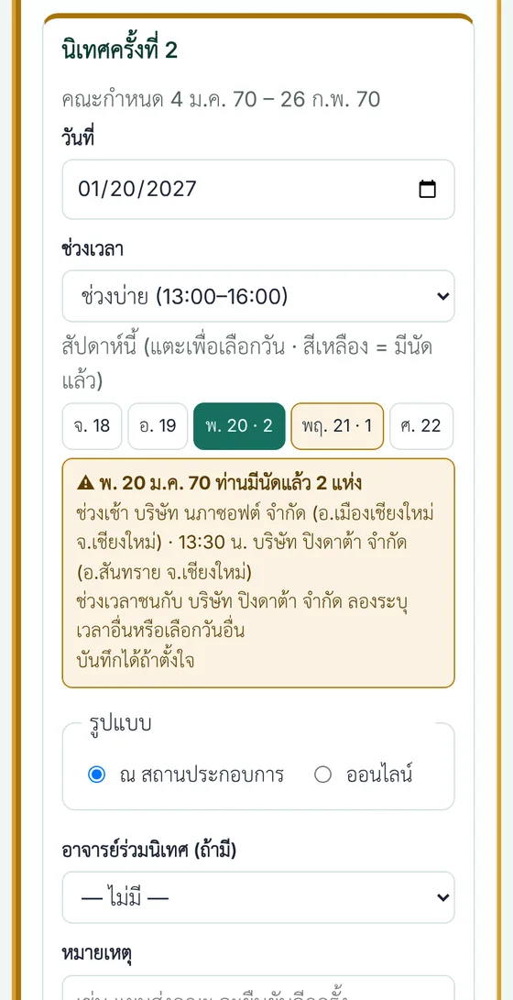
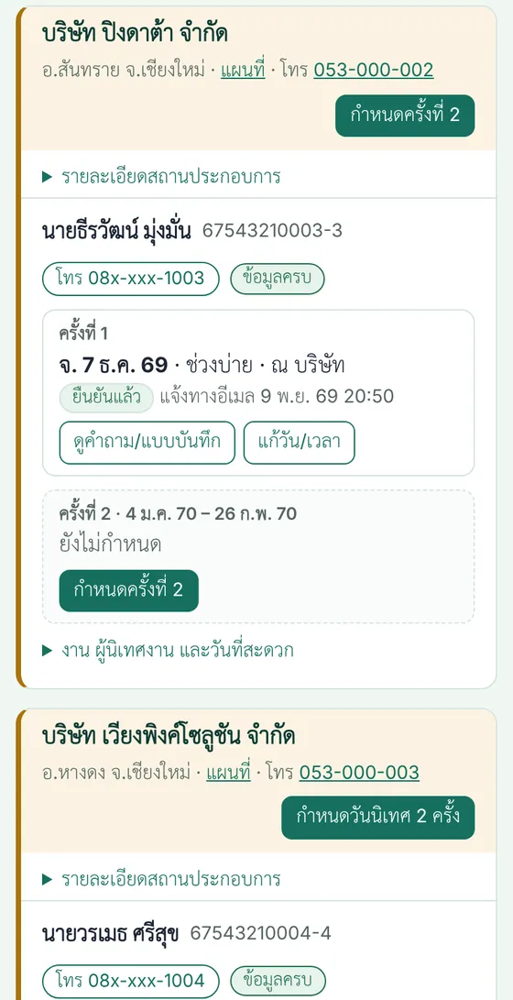
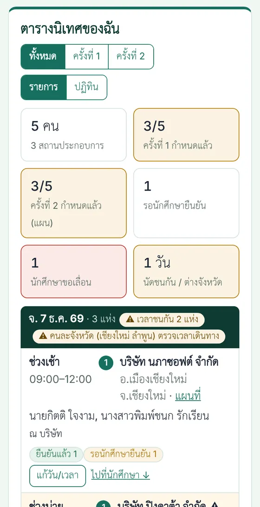
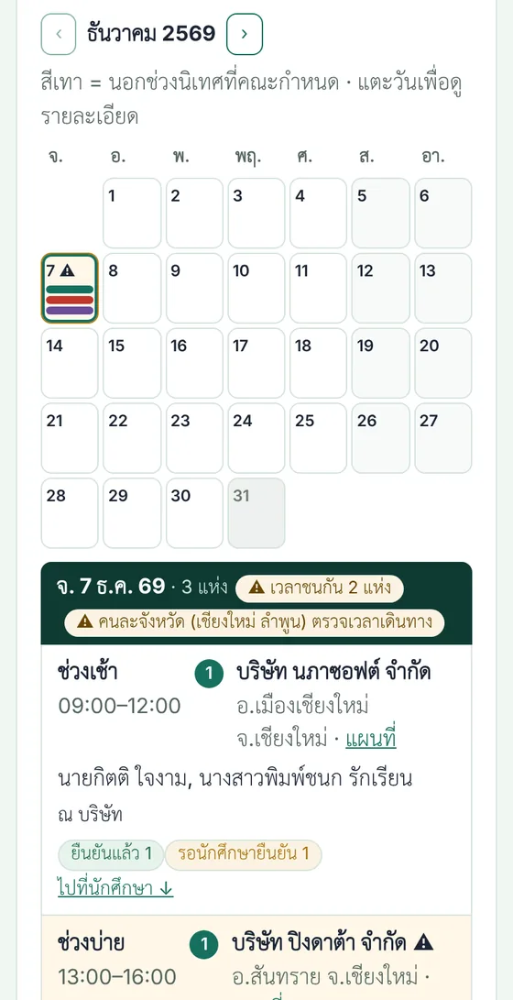
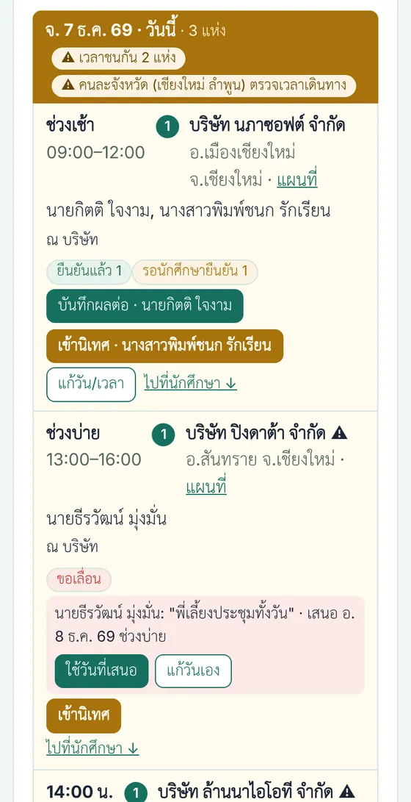
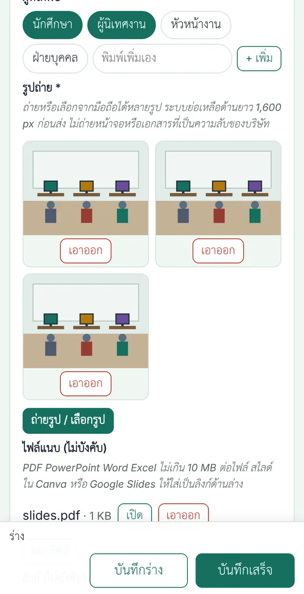
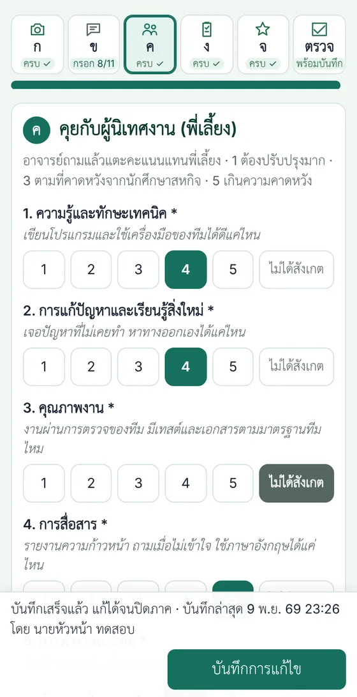
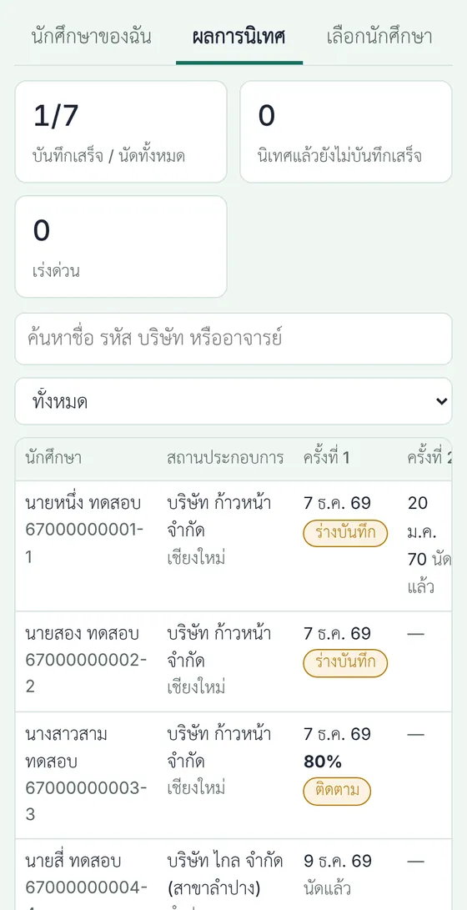

สำหรับอาจารย์
อาจารย์นิเทศเลือกนักศึกษา กำหนดวันนิเทศ และบันทึกผลการนิเทศบนมือถือในระบบ SE-COOP ผู้ประสานงานส่งออกเอกสารให้คณะได้ทันที

ใหม่: บันทึกผลการนิเทศบนมือถือ
แท็บ "นักศึกษาของฉัน" กด "บันทึกผลนิเทศ" ใต้นัด ถ่ายรูปจากมือถือได้ทันที คำถามที่ใช้คุยกับนักศึกษาและพี่เลี้ยงอยู่ในแบบบันทึก ให้คะแนนการนิเทศ 5 ข้อ (ใช้คิดผล S/U) และกรอกให้เสร็จภายใน 3 วันหลังนิเทศ
ขั้นตอนในระบบ SE-COOP
เข้าระบบ
อีเมล @rmutl.ac.th ที่หลักสูตรลงทะเบียนไว้- กรอกอีเมลที่หน้าเข้าระบบ ระบบส่งลิงก์ทางอีเมล ไม่ต้องใช้รหัสผ่าน เครื่องเดิมจำการเข้าระบบไว้ 14 วัน
เลือกนักศึกษาที่จะนิเทศ
ภายใน 11 พ.ย. 2569- แท็บ "เลือกนักศึกษา" แสดงนักศึกษาทุกคนจัดกลุ่มตามสถานประกอบการ พร้อมวันนิเทศครั้งที่ 1 และ 2 กด "รับนิเทศ" แล้วยืนยัน หรือ "รับทั้งบริษัท"
- ปุ่ม "รับนิเทศ" เป็นสีเขียวเมื่อนักศึกษากรอกข้อมูลครบแล้ว ถ้ายังไม่ครบ ปุ่มเป็นสีเทาและขึ้น "รอนักศึกษากรอกข้อมูล" ปุ่ม "รับทั้งบริษัท" เป็นสีเขียวเมื่อทุกคนในบริษัทนั้นกรอกครบ กด "รีเฟรชสถานะล่าสุด" เพื่อดูสถานะใหม่ ถ้าจำเป็นต้องรับก่อน ให้ผู้ประสานงานกำหนดให้
- ยืนยันแล้วระบบแจ้งนักศึกษาทางอีเมล และพาไปแท็บ "นักศึกษาของฉัน" ที่บริษัทนั้น พร้อมเปิดฟอร์มกำหนดวันนิเทศทั้ง 2 ครั้ง (ภาพที่ 1) อาจารย์ท่านอื่นเลือกคนนั้นไม่ได้
- ชื่อ รหัส บริษัท และวันนิเทศเห็นได้ทุกคน เบอร์โทรและ LINE ขึ้นข้างชื่อเฉพาะนักศึกษาที่ท่านรับนิเทศแล้ว แตะเพื่อโทรหรือเปิด LINE ได้ทันที
กดผิดหรือไปนิเทศไม่ได้: ยกเลิกรับนิเทศ
นักศึกษากลับไปรออาจารย์ท่านอื่น- กด "กดผิด? ยกเลิกรับนิเทศ" ที่ขึ้นหลังรับ หรือ "ยกเลิกรับนิเทศ" ในแท็บเลือกนักศึกษา หรือใต้ "งาน ผู้นิเทศงาน และวันที่สะดวก" ของนักศึกษา แล้วยืนยัน
- ระบบล้างวันนิเทศที่ท่านกรอกไว้ แจ้งนักศึกษาทางอีเมล และแจ้งยกเลิกถึงผู้นิเทศงานถ้าเคยส่งนัดไปแล้ว นักศึกษากลับไปรอ อาจารย์ท่านอื่นรับแทนแล้วนัดใหม่ตามขั้นตอนเดิม
- ถ้าบันทึกผลการนิเทศของนักศึกษาคนนั้นแล้ว ยกเลิกเองไม่ได้ ติดต่อผู้ประสานงาน (บันทึกไม่หาย)
กรอกวันนิเทศทั้ง 2 ครั้ง
ภายใน 11 พ.ย. 2569 · ครั้งที่ 1: 1–30 ธ.ค. 2569 · ครั้งที่ 2: 4 ม.ค. – 26 ก.พ. 2570 · ภาพที่ 1–3- ฟอร์มกำหนดวันมีครั้งที่ 1 และ 2 ในหน้าเดียว เลือกวันที่ ช่วงเวลา (เช้า บ่าย หรือระบุเวลา) และรูปแบบ (ณ สถานประกอบการ หรือออนไลน์) แล้วกด "บันทึกวันนิเทศ" ครั้งเดียว เปิดฟอร์มอีกครั้งได้จากปุ่ม "กำหนดวันนิเทศ 2 ครั้ง" หรือ "แก้วันนิเทศ" ที่หัวบริษัท
- แก้หรือเพิ่มทีละครั้ง กดปุ่ม "แก้วัน/เวลา" ใต้นัดครั้งนั้นของนักศึกษา หรือ "กำหนดครั้งที่ 2" ในช่องที่ยังว่าง (ภาพที่ 3) ฟอร์มเปิดพร้อมทั้ง 2 ครั้งโดยเน้นครั้งที่กด แก้ครั้งเดียวหรือทั้งคู่ก็ได้ ในตารางนิเทศของฉันก็มีปุ่ม "แก้วัน/เวลา" ใช้กับนักศึกษาทุกคนในแถวนั้น
- นัดที่นักศึกษายืนยันแล้ว ถ้าเปลี่ยนวัน เวลา รูปแบบ หรืออาจารย์ร่วม นักศึกษาต้องยืนยันใหม่ ติ๊กส่งอีเมลเพื่อแจ้งวันใหม่ แก้หมายเหตุอย่างเดียวไม่ต้องยืนยันใหม่
- ครั้งที่ 1 ต้องกรอก ครั้งที่ 2 กรอกตามแผนไว้ก่อน เพราะคณะใช้แผนทั้ง 2 ครั้งตั้งงบและออกคำสั่ง ไม่ต้องรอนักศึกษายืนยัน เปลี่ยนวันภายหลังได้ ถ้ายังเว้นครั้งที่ 2 ระบบเตือนในสิ่งที่ต้องทำ
- แตะปุ่มวันในสัปดาห์เพื่อเลือกเร็ว ปุ่มสีเหลืองคือวันที่ท่านมีนัดแล้ว ระบบเตือนเมื่อช่วงเวลาชนกับบริษัทอื่น หรือวันเดียวกันอยู่คนละจังหวัด (บันทึกได้ถ้าตั้งใจ) กล่องสีม่วงคือวันที่นักศึกษาแจ้งว่าสะดวก
- ติ๊ก "ใช้กับ" เพื่อใช้วันเดียวกันกับนักศึกษาทุกคนที่ท่านนิเทศในบริษัทเดียวกัน
- มีอาจารย์ไปด้วย เลือก "อาจารย์ร่วมนิเทศ" ชื่อจะอยู่ในแผนการนิเทศ (อาจารย์นิเทศ 2) และตารางคำสั่ง และนัดจะขึ้นในตารางนิเทศของท่านนั้นด้วย
- ครั้งที่ 2 เลือกนิเทศออนไลน์ได้ถ้าเหมาะสม วันนอกรอบที่คณะกำหนดต้องติ๊กยืนยันและเขียนเหตุผล
ดูตารางนิเทศของฉัน
บนสุดของแท็บ "นักศึกษาของฉัน" · ภาพที่ 4–5- ตารางเรียงตามวัน บอกเวลา บริษัท อำเภอและจังหวัด นักศึกษา รูปแบบ และสถานะ รวมนัดที่ท่านเป็นอาจารย์ร่วมนิเทศ ใช้วางแผนไปหลายบริษัทในวันเดียว เช่น เช้าบริษัทหนึ่ง บ่ายอีกบริษัท หรือวันที่ต้องไปต่างจังหวัด
- เลือกดูทั้งหมด ครั้งที่ 1 หรือครั้งที่ 2 และสลับเป็น "ปฏิทิน" รายเดือน แตะวันเพื่อดูรายละเอียด วันสีเทาอยู่นอกช่วงที่คณะกำหนด
- สถานะนัด: แผน (ยังไม่แจ้ง) · รอนักศึกษายืนยัน · ยืนยันแล้ว · ขอเลื่อน · เปลี่ยนวันแล้ว ยังไม่แจ้ง · นิเทศแล้ว รายการที่ยังไม่กำหนดวันอยู่ท้ายตาราง
แจ้งนัดและรอนักศึกษายืนยัน
ส่งอีเมลเมื่อนัดกับบริษัทแล้ว- ค่าเริ่มต้น ครั้งที่ 1 ติ๊ก "ส่งอีเมลแจ้งนัดถึงนักศึกษาและผู้นิเทศงานทันที" ไว้ ครั้งที่ 2 เป็นแผน (ไม่ส่ง) นักศึกษาเห็นในระบบเป็น "แผน อาจเปลี่ยน" เมื่อยืนยันกับบริษัทแล้วกด "แจ้งนัดทางอีเมล" ในตารางหรือใต้นัด ถ้ายังไม่ได้คุยกับบริษัท ให้เอาเครื่องหมายครั้งที่ 1 ออกได้
- อีเมลแนบไฟล์ปฏิทิน (.ics) ผู้นิเทศงานคนเดียวกันได้ฉบับเดียว ท่านได้สำเนา และเมื่อผู้รับกดตอบกลับ อีเมลจะถึงท่านโดยตรง ระบบส่งซ้ำเฉพาะเมื่อวันเวลาเปลี่ยน และแจ้งยกเลิกเมื่อลบนัด
- นักศึกษาถามผู้นิเทศงานแล้วกด "สะดวกตามนี้" หรือ "ขอเลื่อน" พร้อมเหตุผล และเสนอวันที่ผู้นิเทศงานสะดวกได้ ท่านได้อีเมลทั้งสองกรณี ถ้าเสนอวันมา กด "ใช้วันที่เสนอ" ระบบเปลี่ยนวันและแจ้งนักศึกษากับผู้นิเทศงานให้ หรือกด "แก้วันเอง"
- ท่านได้อีเมลเมื่อนักศึกษาแก้เบอร์โทร LINE หรือข้อมูลผู้นิเทศงาน และเมื่อนักศึกษาแจ้งปัญหาการฝึก (ส่งสำเนาถึงผู้ประสานงาน)
- ติดต่อนักศึกษาจากเบอร์โทรและ LINE ข้างชื่อในแท็บ "นักศึกษาของฉัน" (ถ้านักศึกษากรอก)
อีเมลเตือนล่วงหน้า 1 วัน
ระบบส่งเองทุกวันประมาณ 16:00 น.- ก่อนวันนิเทศ 1 วัน ระบบส่งอีเมลเตือนถึงนักศึกษาและผู้นิเทศงาน (เฉพาะนัดที่แจ้งทางอีเมลแล้ว) และส่งสรุปนัดของวันพรุ่งนี้ถึงท่าน พร้อมแผนที่ เบอร์นักศึกษา และผู้นิเทศงาน
- นัดที่ยังเป็นแผนเตือนเฉพาะท่าน นัดที่นักศึกษาขอเลื่อนอยู่ เลื่อนไปแล้ว หรือลบแล้ว ระบบไม่เตือน
เอกสารส่งคณะ
ผู้ประสานงานส่งคณะ 12 พ.ย. 2569- ระบบสร้างแผนการนิเทศตามตารางของคณะ (Excel) แบบเสนองบประมาณการนิเทศ (Word) และตารางแนบท้ายคำสั่งแต่งตั้ง จากข้อมูลในระบบโดยตรง ไม่ต้องกรอก Google Form
- งบประมาณคิดจากการนิเทศ ณ สถานประกอบการ: ในเขตอำเภอเมืองเชียงใหม่เบิกค่ารถโดยสาร นอกเขตเบิกค่าชดเชยน้ำมันตามระยะทาง ผู้ประสานงานจะขอหมายเลขทะเบียนรถจากอาจารย์ที่ขับรถไปนิเทศนอกเขต
- เอกสารมีชื่ออาจารย์ นักศึกษา บริษัท และวันนิเทศ ไม่มีเบอร์หรืออีเมล
บันทึกผลการนิเทศ
ระหว่างนิเทศหรือภายใน 3 วันหลังนิเทศ · ภาพที่ 6–8- วันนิเทศ ปุ่มใต้นัดและในตารางนิเทศเป็น "เข้านิเทศ" (สีทอง) กดเพื่อดูคำถามและกรอกแบบบันทึกระหว่างคุย หรือมากรอกภายหลัง (ภาพที่ 6) ก่อนวันนิเทศปุ่มเป็น "ดูคำถาม/แบบบันทึก" หลังวันเป็น "บันทึกผลนิเทศ" ผู้ประสานงานเห็นว่าอาจารย์ท่านใดส่งบันทึกแล้ว
- แบบบันทึกมีปุ่มไอคอน 5 ส่วนด้านบนให้แตะสลับ แต่ละปุ่มบอกว่าครบหรือขาดกี่ช่อง และปุ่ม "ตรวจ" สรุปสิ่งที่กรอกแล้วก่อนกดบันทึก ไปเป็นคู่ อาจารย์ท่านใดก็ได้กรอกจากเครื่องของตนเอง กรอกพร้อมกันได้ (ภาพที่ 7)
- 5 ส่วน: ก รูป ไฟล์ ลิงก์ · ข คุยกับนักศึกษา · ค คุยกับผู้นิเทศงาน (แตะคะแนน 7 ด้าน) · ง อาจารย์สรุป · จ คะแนนการนิเทศ 5 ข้อ
- ส่วนใหญ่แตะเลือก ไม่มีในรายการพิมพ์เพิ่มเองได้ กด "บันทึกร่าง" ไว้ก่อนได้ กด "บันทึกเสร็จ" เมื่อช่องบังคับครบ แก้ได้จนปิดภาค
- นิเทศหลายคนบริษัทเดียวกัน ติ๊กชื่อเพื่อนในหน้า "ตรวจ" รูปและความเห็นภาพรวมของบริษัทจะใช้ร่วมกัน
- ขั้นตอนเต็ม คำถามที่ใช้คุย และใครเห็นอะไร อยู่ในคู่มือการนิเทศและแบบบันทึก
ดูผลการนิเทศของทุกคน
แท็บ "ผลการนิเทศ"- อาจารย์ทุกท่านดูผลการนิเทศ รูป และไฟล์ของนักศึกษาทุกคนได้ เพื่อเรียนรู้จากกันและปรับปรุงหลักสูตร (ไม่มีข้อมูลติดต่อและบันทึกลับ)
- ผู้ประสานงานส่งออกผลการนิเทศเป็น Excel สำหรับรายงาน AUN-QA
ภาพตัวอย่างใช้ข้อมูลสมมติ (ชื่อ บริษัท เบอร์โทร) ภาพแบบบันทึกเพิ่มเติมอยู่ในคู่มือการนิเทศ









ในวันนิเทศ
- ใช้เวลา 45–60 นาที: ทักทายและขออนุญาตถ่ายรูป · นักศึกษาเล่างาน 10–15 นาที · คุยกับผู้นิเทศงาน 15 นาที · ดูที่ทำงาน · สรุปข้อเสนอแนะ
- ดูข้อมูลการเดินทาง ที่จอดรถ และข้อกำหนดการเข้า–ออกที่นักศึกษากรอกไว้ในระบบ
- คำถามที่ใช้คุยกับนักศึกษาและพี่เลี้ยงอยู่ในคู่มือการนิเทศ และในแบบบันทึกบนมือถือ
การประเมินผล S/U
อาจารย์นิเทศให้คะแนนการนิเทศ (ส่วน จ ในแบบบันทึก) และอ่านให้คะแนนรายงานสรุปการฝึกและการนำเสนอผลงานของนักศึกษาที่ตนนิเทศ ผู้ประสานงานเห็นทุกส่วนและให้คะแนนแทนได้เมื่อจำเป็น ภาระจึงไม่ตกที่อาจารย์ประจำวิชาคนเดียว
| ส่วน | ไม่มีนิเทศครั้งที่ 2 | มีนิเทศครั้งที่ 2 |
|---|---|---|
| สถานประกอบการ (สก.วศ.04) | 40% | 40% |
| การนิเทศครั้งที่ 1 | 20% | 20% |
| การนิเทศครั้งที่ 2 | — | 10% |
| รายงานสรุปการฝึก | 20% | 15% |
| การนำเสนอผลงานและโปสเตอร์ | 20% | 15% |
ผ่านเมื่อทำกิจกรรมบังคับครบ ทุกส่วนได้ไม่น้อยกว่าร้อยละ 50 และรวมไม่น้อยกว่าร้อยละ 60 · เกณฑ์ฉบับเต็ม
ระบบของคณะและของหลักสูตร
ระบบ COOP ของคณะ
- ทะเบียนสหกิจ และใบสมัคร
- บันทึกการปฏิบัติงานรายวัน
- สถานประกอบการประเมินระหว่างฝึก (เข้าด้วย PIN)
- แบบประเมิน สก.วศ.04
ระบบ SE-COOP ของหลักสูตร
- ผู้นิเทศงาน ตำแหน่งงาน แผนที่ และข้อมูลการเดินทาง
- อาจารย์เลือกนักศึกษาและกำหนดวันนิเทศ
- ตารางให้คณะออกคำสั่งแต่งตั้งอาจารย์นิเทศ
- บันทึกผลการนิเทศ รูป และความเห็นของบริษัทต่อหลักสูตร
- ต่อไป: งานปลายภาค ผล S/U และคลังผลงานรุ่นน้อง